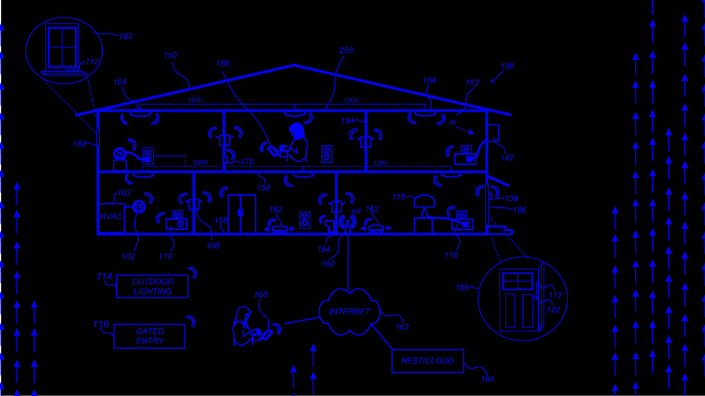

Used to extract information from the raw data in databases information
that is then expressed in a comprehensible form and can be used
for a variety of purposes such as prediction and inference.
90vwxyzXYZ 90vwxyzXYZ 90vwxyzXYZ 90vwxyzXYZ 90vwxyzXYZ